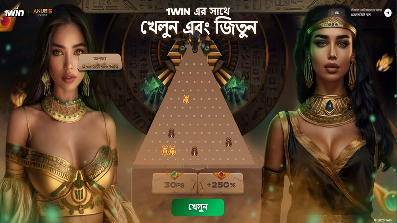
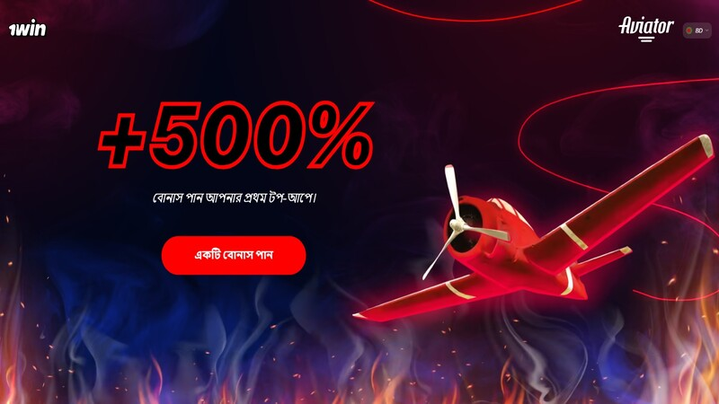
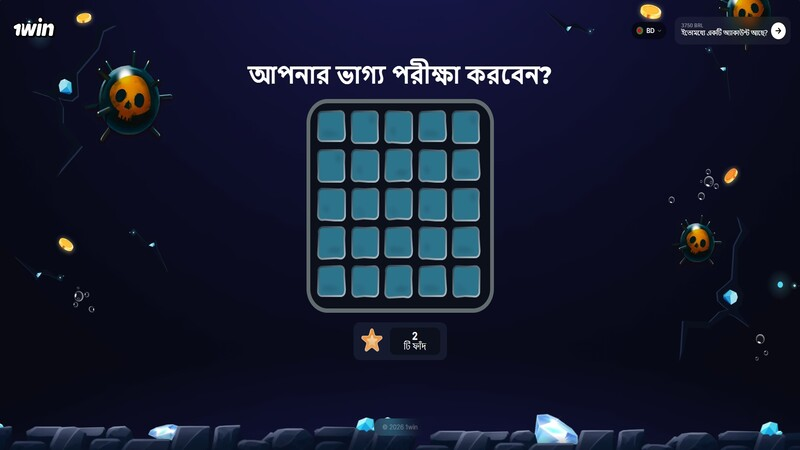
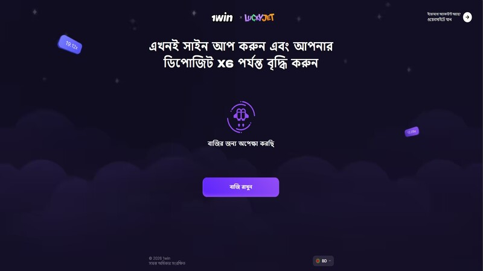

1win-এ কীভাবে Anubis Plinko জিতবেন: কার্যকরী স্ট্র্যাটেজি এবং সিক্রেট অ্যালগরিদম

অনলাইন ক্যাসিনোতে ক্র্যাশ গেমের জনপ্রিয়তা দ্রুত বাড়ছে, এবং 1win-এ Anubis Plinko এখন ট্রেন্ডিংয়ের শীর্ষে। অনেকেই একে এভিয়েটর গেমের সাথে তুলনা করেন, কিন্তু সত্যি কি কোনো উইনিং সিস্টেম আছে?
Anubis Plinko অ্যালগরিদম কীভাবে কাজ করে?
এই গেমটি Provably Fair সিস্টেমের ওপর ভিত্তি করে তৈরি। বলটি ওপর থেকে পড়ে পিনের সাথে ধাক্কা খেয়ে নিচের ঘরে যায়। মাঝখানের ঘরগুলো সবচেয়ে কম মাল্টিপ্লায়ার (x1 এর কম) দেয়, আর ধারের ঘরগুলো দেয় বিশাল জয় (x1000 পর্যন্ত)। অ্যালগরিদমটি চক্রাকারে কাজ করে: মেশিন যদি অনেকক্ষণ মাঝখানে হিট করে, তবে খুব শীঘ্রই ধারের ঘরে বড় পেআউট আসতে চলেছে।
"Anubis Double Boost" স্কিম
- সবচেয়ে বেশি রো বা লাইন সেট করুন (16 lines)।
- ফিডিং ফেজ: রিস্ক লেভেল Low সেট করুন এবং মাঝখানের জোনে ৭-৮টি বল ড্রপ করুন।
- দ্য শিফট: হঠাৎ করে রিস্ক লেভেল High করে দিন এবং বেট সাইজ ৩ থেকে ৫ গুণ বাড়িয়ে দিন।
- পরপর ৫-৭টি বল ড্রপ করুন। অ্যালগরিদম এটি ব্যালেন্স করার জন্য ধারের বড় মাল্টিপ্লায়ারগুলোতে হিট করবে।
Aviator গেম জেতার উপায়: লো মাল্টিপ্লায়ার ট্যাকটিকস

এভিয়েটর ক্র্যাশ গেমটি এখনও একটি ফুল হিট। মূল লক্ষ্য হলো বিমানটি উড়ে যাওয়ার আগে ক্যাশআউট করা। প্রফেশনাল প্লেয়াররা কম ঝুঁকির গাণিতিক স্ট্র্যাটেজি পছন্দ করেন।
মূল ট্রিক: "Safe Takeoff" স্ট্র্যাটেজি (x1.15)
পরিসংখ্যান অনুযায়ী, ৯০% রাউন্ডেই বিমানটি x1.15 মার্ক পার করে। আপনার Auto-Cashout ফিচারটি x1.15-এ সেট করুন এবং মোট ব্যালেন্সের ৫% বেট ধরুন। একবারে টানা ৫টি ফ্লাইটের সিরিজ খেলুন।
গুরুত্বপূর্ণ সতর্কবার্তা: প্রতি ১০-১৫ রাউন্ডে একবার ইনস্ট্যান্ট ক্র্যাশ (x1.00) ঘটে। সিরিজ শুরু করার আগে অবশ্যই গেমের হিস্ট্রি চেক করে নেবেন।
1win-এ Mines সিক্রেট: ধাপে ধাপে 3-Mines স্কিম

1win-এর Mines গেমটি প্লেয়ারদের নিজেদের রিস্ক লেভেল পুরোপুরি কন্ট্রোল করতে দেয়। ২৫টি ঘরের ফিল্ডে লুকিয়ে থাকে ক্রিস্টাল অথবা বিপজ্জনক মাইন।
"Smart Sweeper" অ্যালগরিদম
মাইনের সংখ্যা ৩ সেট করুন। ফিল্ডের একদম কোনার ৪টি ঘর ওপেন করুন। এই ক্ষেত্রে আপনার মাল্টিপ্লায়ার x1.45-এ পৌঁছাবে। মাঝখানের ঘর এড়িয়ে সাথে সাথে ক্যাশআউট করুন।
Lucky Jet-এ ব্যালেন্স বুস্ট: x100 মাল্টিপ্লায়ার ধরার উপায়

Lucky Jet স্লটটি একটি 1win এক্সক্লুসিভ গেম। এর গাণিতিক অ্যালগরিদমে আল্ট্রা-হাই মাল্টিপ্লায়ার (x100+) আসার একটি নির্দিষ্ট চক্র রয়েছে।
ট্যাকটিক: "Hunting the Golden X"
অ্যালগরিদম প্রতি ৬০-৯০ মিনিটে একবার x100 মাল্টিপ্লায়ার দেয়। গেম হিস্ট্রিতে শেষ কখন x100 এসেছিল তা খুঁজুন, সেই সময় থেকে ৬০ মিনিট অপেক্ষা করুন এবং পরবর্তী বড় মাল্টিপ্লায়ারটি ধরতে বেট শুরু করুন।